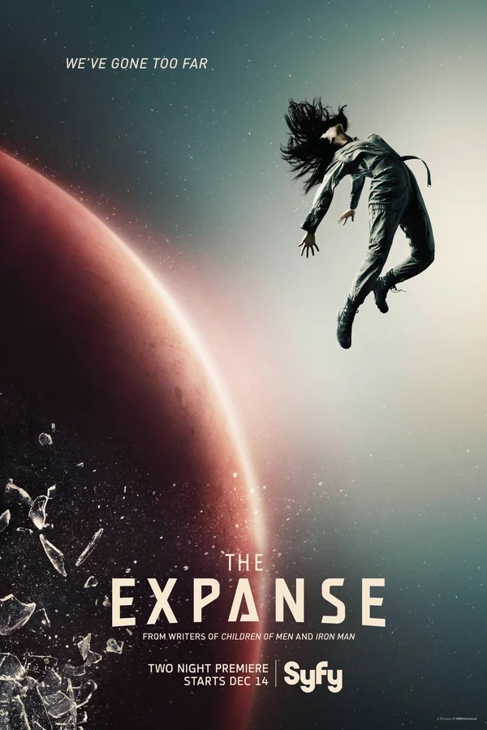
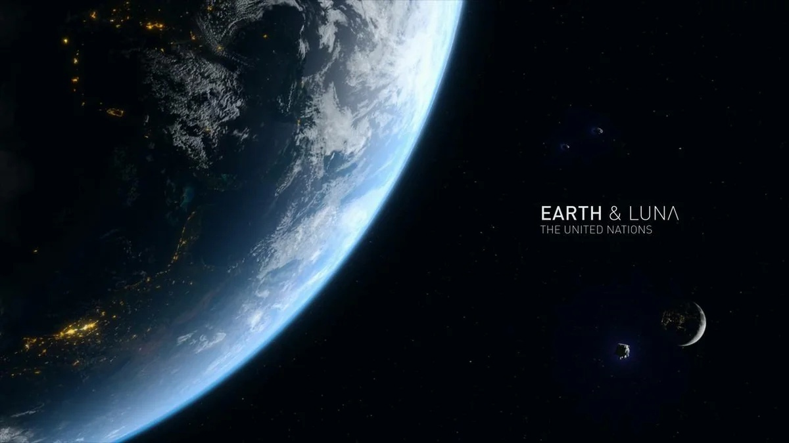
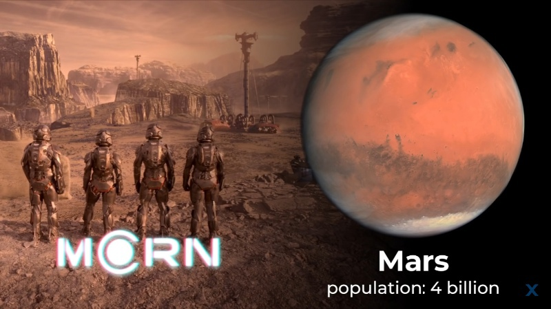
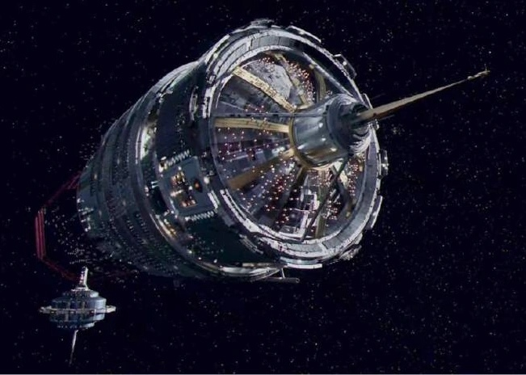
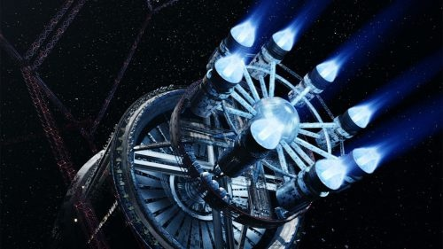

Экспансия
Что из себя представляет
«Экспансия» — серия научно-фантастических произведений под авторством Джеймса Кори. Джеймс Кори — это псевдоним двух соавторов: Даниэля Абрахама (англ. Daniel Abraham) и Тая Френка (англ. Ty Franck). Первый роман серии: «Пробуждение Левиафана», в 2012 году был номинирован на премию «Хьюго» за лучший роман. Это Премия присуждается ежегодно за лучшие произведения в жанре фантастики «Всемирным обществом научной фантастики».
События этой вселенной происходят через несколько сотен лет от нашего времени. После изобретения двигателя Эпштейна, позволяющего быстро и эффективно перемещаться в космосе, человечество осваивает Солнечную систему, колонизировав Луну, Марс, некоторые другие планеты и астероиды. На Марсе запущена программа терраформирования. Земля, управляемая ООН, и объявивший независимость Марс устанавливают дипломатические отношения и наращивают военные силы.
В поясе астероидов в это время вырастают поколения людей, называющие себя островитянами. Они больше не способны жить на каких-либо планетах потому, что их кости слишком ослабли из-за отсутствия гравитации. Главным видом их деятельности является добыча полезных ископаемых и других полезных ресурсов в поясе астероидов. Островитяне угнетаются Марсом и Землёй, поэтому среди них популярны идеи сепаратизма и терроризма. Они создают организацию «Союз внешних планет», противостоящую агрессии людей из «внутренних» планет. Земляне и Марсиане считают «СВП» террористической организацией.
Политика
Люди в данной вселенной условно делятся на три расы, а именно земляне, марсиане и островитяне. Между Марсом и Землёй идёт холодная война. Бывшая колония Земли стала независимой военной державой. Пояс, в ввиду удаленности, не участвует в соперничестве, однако и Марсом и Землёй не признается, как полноценный соперник, задвигается на второй план. Пояс для внутренних планет — отдаленные шахтерские колонии, полностью зависимые от поставок воздуха, воды и продуктов.
Жители пояса повсеместно обложены налогами. Организация «СВП» борется за независимости пояса. Состав данной организации очень разношерстный: от успешных дипломатов до самых обычных бандитов-рэкетиров и террористов. В космосе процветает пиратство.
Технологии
Создаются космические корабли и куполообразные города по всей Солнечной системе, колонизируется пояс астероидов — выбираются наиболее подходящие по размерам и расположению астероиды, в течение нескольких лет их раскручивают, чтобы создать гравитацию, затем начинается рытье тоннелей и дальнейшее налаживание коммуникаций. Технологии развиваются в реалистичном направлении. Традиционные снаряды и ракеты — это основное оружие для военных кораблей. Искусственная гравитация производится посредством вращения или линейного ускорения. Скорость корабля ограничена кривыми ускорения не выше, чем человеческое тело может выдержать. Обычно для землян — это 1 G. Для кораблей Пояса или марсиан — 0,3 — 0,6 G. Люди, выросшие на Поясе или Марсе, не привыкли к полной земной гравитации. В экстренных случаях экипажи могут работать при более высоких нагрузках на короткие промежутки времени. Экипаж и пассажиры используют амортизирующие, зачастую гелевые кресла, в кресла встроены механизмы инъекции, вводящие в организм экипажа стимуляторы и другие лекарства, предохраняющие пассажиров от сдавливания и потери сознания при высокой нагрузке. Добыча воды и кислорода являются основными проблемами для людей, живущих в поясе астероидов и дальше. Гигантские корабли занимаются сбором льда из колец Сатурна и доставкой на станции Пояса.
Передача информации осуществляется только со скоростью света, на передачу информации на большое расстояние уходит от нескольких минут, до нескольких часов — в следствии чего координация сил на расстоянии происходит с задержкой.
Двигатель Эпштейна
Самые передовые человеческие технологии в серии — это двигатель Эпштейна. Модифицированный термоядерный привод изобрел марсианин Соломон Эпштейн за сто пятьдесят лет до начала первой книги. Перемещение на этом двигателе требует начального ускорения в направлении своего назначения на первую половину пути, после чего он переворачивается носом вокруг и останавливается с той же тягой на оставшееся расстояние. Двигатель Эпштейна гораздо эффективнее и позволяет освободить место от твердого или жидкого топлива для традиционных двигателей. Однако все корабли снабжаются обоими видами двигателей. Термоядерный двигатель Эпштейна используется в качестве маршевого, реактивный — в качестве маневрового. Это позволило человечеству расширить дальность перемещения от Земли и внутренних планет, и позволило им колонизировать пояс астероидов и внешние планеты.